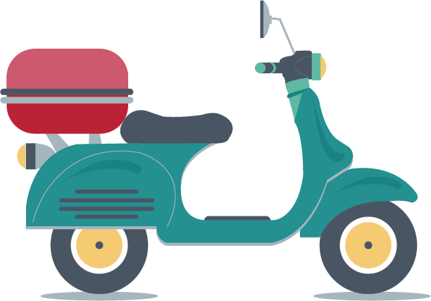

Photo by Road Accidents
There were about
467044.0
car fatalities in 2018 of which 32.42% were fatalities, which is an increase in Deaths from the previous years by 0.5%.
June 27, 2023
Photo by Road Accidents
There were about
467044.0
car fatalities in 2018 of which 32.42% were fatalities, which is an increase in Deaths from the previous years by 0.5%.
In 2018:
.png) Image: Car
Image: Car
Cars accounted for 24.3% of all accidents with a Fatality Rate of 20.3% and 26.3% ending up damaged.
 Image: Two-Wheeler
Two-Wheelers accounted for 35.2% of all accidents with a Fatality Rate of 31.40% and 32.7% ending up damaged.
Image: Trucks
Trucks accounted for 12.3% of all accidents with a Fatality Rate of 15.76% and 10.8% ending up damaged.
 Image: Rickshaws
Image: Rickshaws
Rickshaws accounted for 6.1% of all accidents with a Fatality Rate of 5.08% and 7.35% ending up damaged.
Uttar Pradesh has the highest overall value driver & passenger fatalities, with the highest count being between the ages of 25 - 35 years in all genders.
In 2018, two-wheelers accounted for 35% of all accidental fatalities and below we'll look at states and fatalities of drivers and passengers which aren't exercising traffic regulations of wearing helmets

Total Injuries
Image: Total Drivers Injuries in 2018
Greivous Injuries
Image: Drivers Greivous Injuries
Minor Injuries
Image: Drivers Minor Injuries
Total Injuries
Image: Passengers Injured in 2018
Greivous Injuries
Image: Passengers Greivous Injuries
Minor Injuries
Image: Passengers Minor Injuries